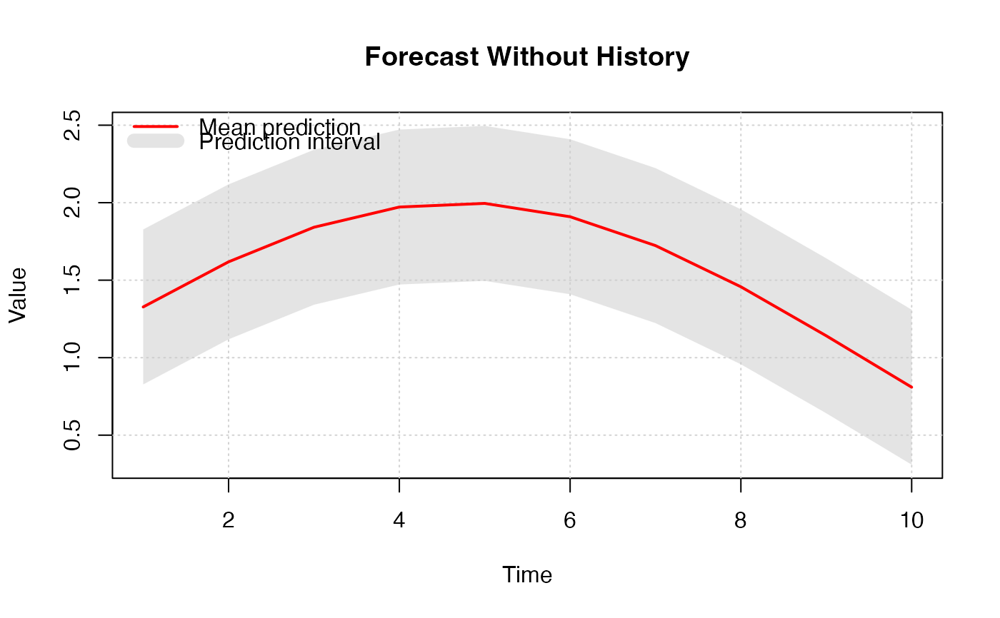
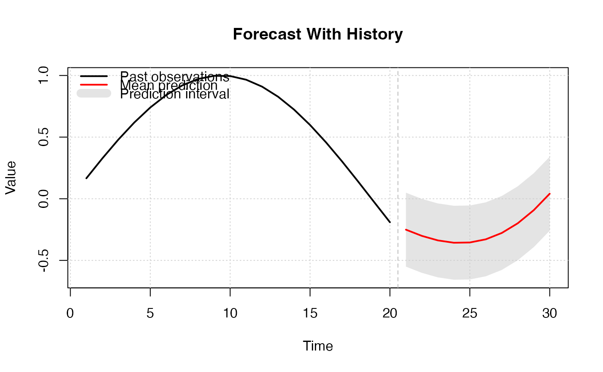
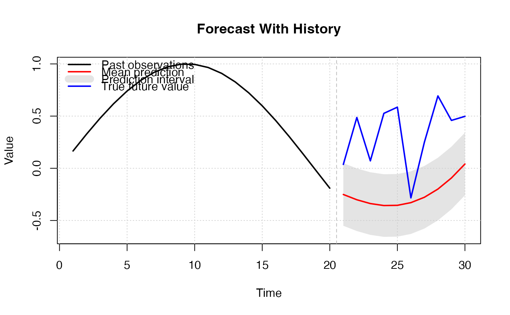

plot_prediction_interval.RdThis function creates a time series plot showing prediction intervals, including optional past observations. The forecast is visualized with a confidence interval band and mean prediction line.
plot_prediction_interval(
mean_pred,
lower_pred,
upper_pred,
col_past = "black",
col_mean = "red",
col_future = "blue",
col_ci = rgb(0.8, 0.8, 0.8, 0.5),
legend_position = "topleft",
x_past = NULL,
x_future = NULL,
...
)Numeric vector of mean forecasted values. Required.
Numeric vector of lower bounds of the prediction interval. Required.
Numeric vector of upper bounds of the prediction interval. Required.
Color for past observations. Default is `"black"`.
Color for the mean forecast line. Default is `"red"`.
Color for true future value. Default is `"blue"`.
Color for the confidence interval polygon. Default is `rgb(0.8, 0.8, 0.8, 0.5)`.
Position of the legend. Passed to the `legend()` function. Default is `"topleft"`.
Numeric vector of past observations. If `NULL`, the plot will contain only forecasted values. Default is `NULL`.
Numeric vector of future observations.
Additional arguments passed to the `plot()` function.
No return value. Called for side effects (generates a plot).
# Without past observations:
plot_prediction_interval(
mean_pred = sin(1:10/3) + 1,
lower_pred = sin(1:10/3) + 1 - 0.5,
upper_pred = sin(1:10/3) + 1 + 0.5,
main = "Forecast Without History"
)

# With past observations:
plot_prediction_interval(
x_past = sin(1:20/6),
mean_pred = sin(21:30/6) + 0.1 * (1:10),
lower_pred = sin(21:30/6) + 0.1 * (1:10) - 0.3,
upper_pred = sin(21:30/6) + 0.1 * (1:10) + 0.3,
main = "Forecast With History"
)

# With past observations:
set.seed(123)
mean_pred <- sin(21:30/6) + 0.1 * (1:10)
plot_prediction_interval(
x_past = sin(1:20/6),
mean_pred = mean_pred,
x_future = mean_pred + runif(length(mean_pred)),
lower_pred = sin(21:30/6) + 0.1 * (1:10) - 0.3,
upper_pred = sin(21:30/6) + 0.1 * (1:10) + 0.3,
main = "Forecast With History"
)
